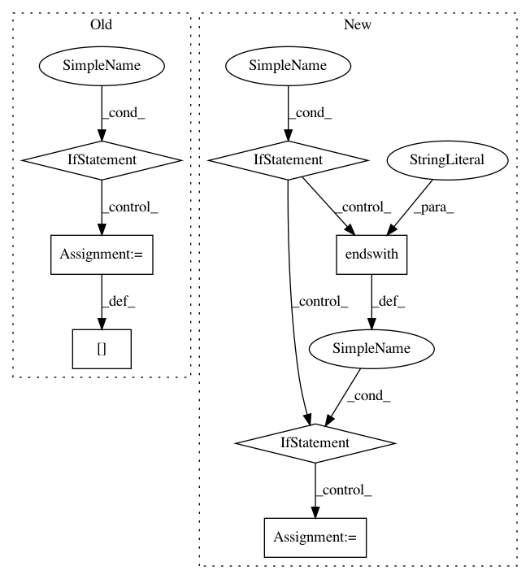

6316edd2aacd0d2a072a07868971049d3f554d58,wandb/internal/file_stream.py,CRDedupeFilePolicy,process_chunks,#CRDedupeFilePolicy#Any#,75
Before Change
def process_chunks(self, chunks):
content = []
for line in [c.data for c in chunks]:
if content and content[-1].endswith("\r"):
content[-1] = line
else:
content.append(line)
chunk_id = self._chunk_id
self._chunk_id += len(content)
if content and content[-1].endswith("\r"):
self._chunk_id -= 1
After Change
lines = c.data.split(os.linesep)
for line in lines:
line = line.split("\r")[-1]
if line:
// check for cursor up control character
if line.endswith("\x1b\x5b\x41"):
if flag:
ret.pop()
flag = False
else:
ret.append(tstamp + " " + line + os.linesep)
flag = True
chunk_id = self._chunk_id
self._chunk_id += len(ret)
return {
"offset": chunk_id,
In pattern: SUPERPATTERN
Frequency: 3
Non-data size: 7
Instances
Project Name: wandb/client
Commit Name: 6316edd2aacd0d2a072a07868971049d3f554d58
Time: 2020-08-25
Author: farizrahman4u@gmail.com
File Name: wandb/internal/file_stream.py
Class Name: CRDedupeFilePolicy
Method Name: process_chunks
Project Name: gboeing/osmnx
Commit Name: 248fa57af17b42deec9c818eb83aa71e63d50354
Time: 2020-06-08
Author: boeing@usc.edu
File Name: osmnx/io.py
Class Name:
Method Name: _convert_edge_attr_types
Project Name: dpressel/mead-baseline
Commit Name: 2eb4c5f77bd8da9b1e23851b0acb84543e442953
Time: 2018-09-24
Author: dpressel@gmail.com
File Name: python/baseline/pytorch/classify/model.py
Class Name: WordClassifierModelBase
Method Name: create